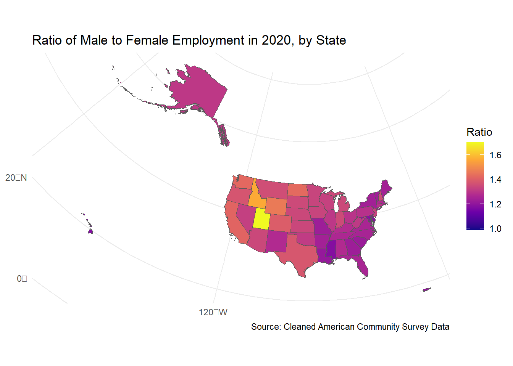
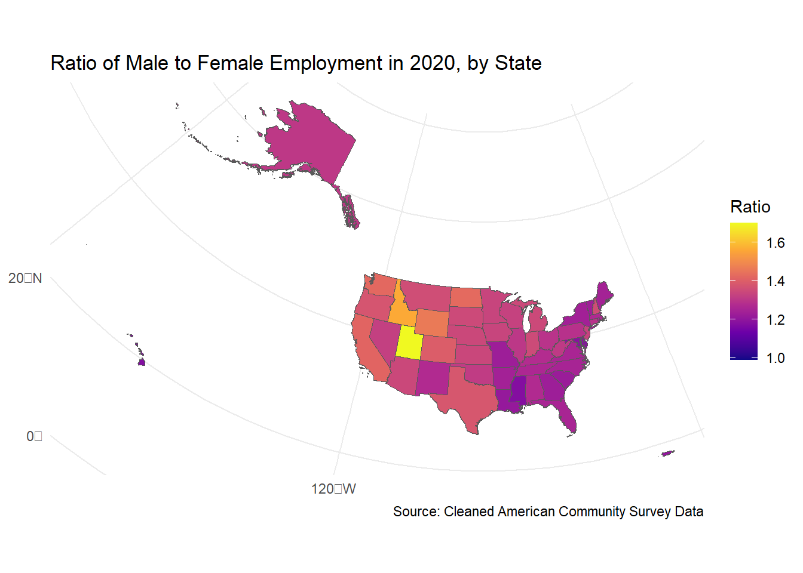
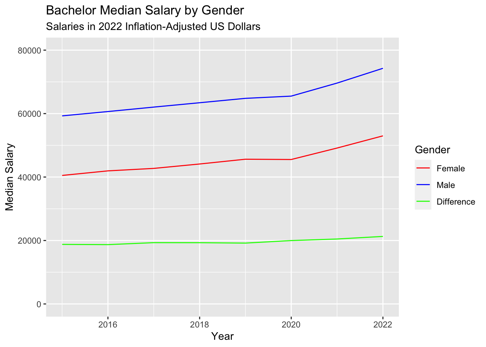

Warning: package 'tidycensus' was built under R version 4.3.3Warning: package 'sf' was built under R version 4.3.3

By Team 8
In the pursuit of success, education is a key element, but what happens if the path of education is not equal to all? This project examines America’s educational landscape, and examines how race and gender affect educational opportunities in the United States. Our goal is to expose inequalities, address challenges and spark conversations to transcend statistics to heal the gender-racial education divide in the country.
The project confronts the stark disparities within and between gender and racial groups. A canvas of educational attainment paints a picture of untapped potential, begging the question: who truly wins the race to success?
Warning: package 'tidycensus' was built under R version 4.3.3Warning: package 'sf' was built under R version 4.3.3
The project begins by mapping the educational voyage of women and men across the fifty states and Puerto Rico. The project then dissects the percentage of women that has attained a bachelor’s degree or higher, faceted by race. Through a lens of seven years, from 2015 - 2022, we project the percentage of women that has attained a bachelor’s degree of higher for the next five years. Yet, the journey does not end there; the project mirrors this process for men, dissecting the educational diversity with equal rigor.
Warning: package 'shiny' was built under R version 4.3.3Also guided by the beacon of economic insight, the project delves into income data of genders and races spanning sixty two years. The income data by the U.S. Department of Labor is more than statistics; they embody the struggle for equity. With each statistical model, this project sheds light on the pay gap differences between men and women, and between races.

This project also investigates the amount of females and males above the poverty line across U.S. states and sees the differences for different gender and races. The disparities are particularly seen for Native Hawaiian and Other Pacific Islander Alone, Black Alone, and most notably, American Indian and Alaska Native Alone populations. These findings further highlight the systemic injustices that contribute to inequality within communities.
This project stands on the crossroads of data and destiny. Join us as we continue this quest for a more egalitarian society, one insight at a time.